網頁與 PowerPoint，逐頁實測
NASA 公開資料 → AGENTS.md 規則 → 七頁簡報 → 網站實際下載 → PowerPoint 開啟驗收。
資料來源、驗收結果與已知差異
這次選用 NASA 的太陽系公開資料，由 AI 依 AGENTS.md 先規劃七頁大綱，再建立標準內容資料，沿用既有風格與版面。四套風格共二十八頁網頁畫面檢查；下方呈現暗黑風的七頁實際對照，點圖片可看完整 1280 × 720 圖。
右欄由本機 PowerPoint 16.0 開啟「按網站下載按鈕產生的檔案」後輸出，並非網頁截圖冒充 PPT。七頁共 263 個原生文字／圖形物件，來源留於講者備註。背景裝飾為圖片物件，文字、表格與比例條仍可編輯。
本次驗收找出並修正：字級換算錯誤、短標題與百分比被拆行、單邊線誤轉整圈框線。PPT 使用微軟正黑體作相容字體，因此與網頁思源黑體仍有字形、行距及圓角差異，並非逐像素相同。這份例子已用桌面 PowerPoint 實際檢視，不代表所有任意資料都自動驗收完成。
來源：NASA Solar System Facts、About Planets、JPL Planets。50%、25%、25% 是 4、2、2 顆除以 8 的計算結果，不是質量或體積比例。
01 · 八顆行星，一個太陽系

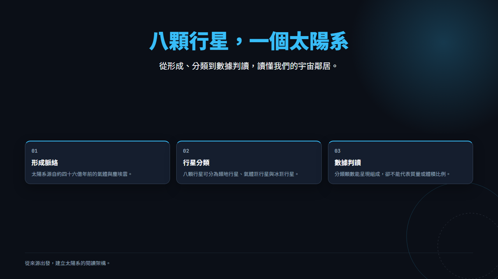

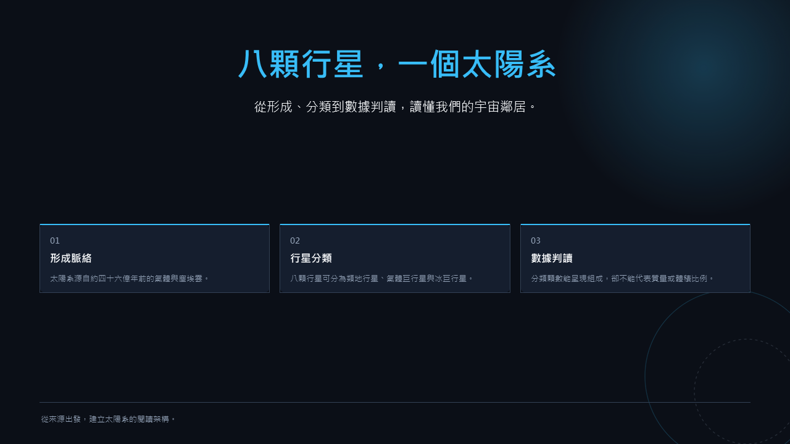
02 · 太陽系從雲團，逐步形成行星

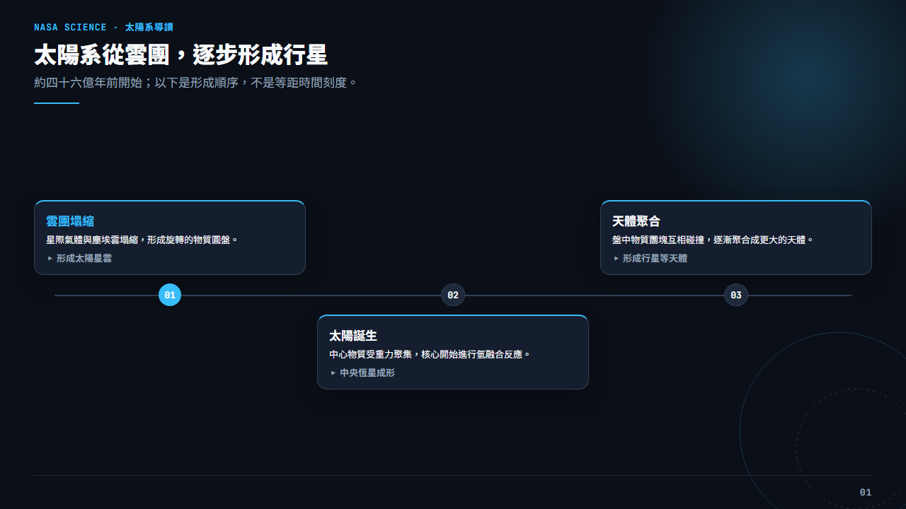

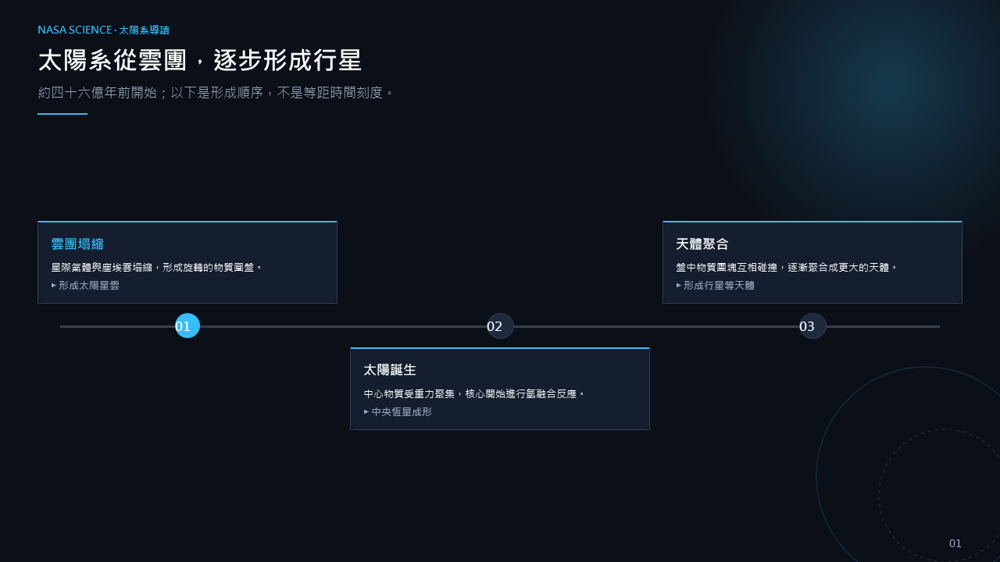
03 · 距離與材料，塑造三類行星

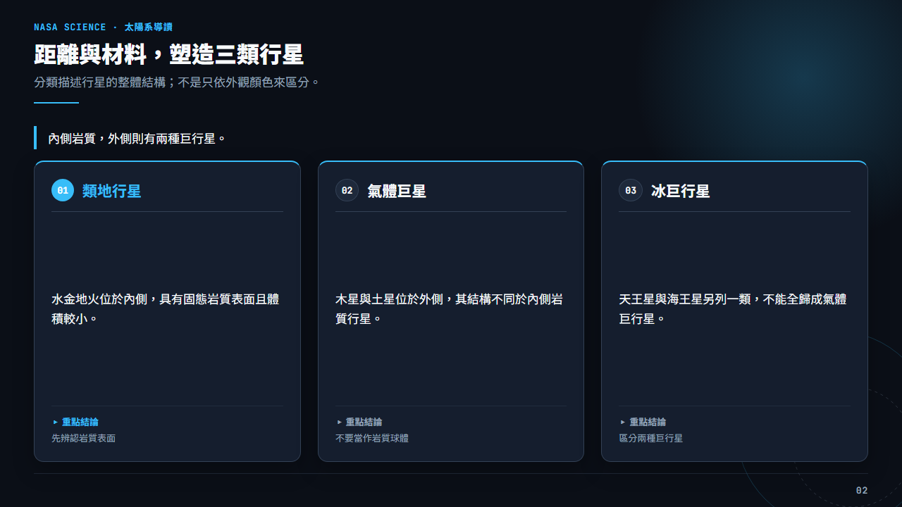

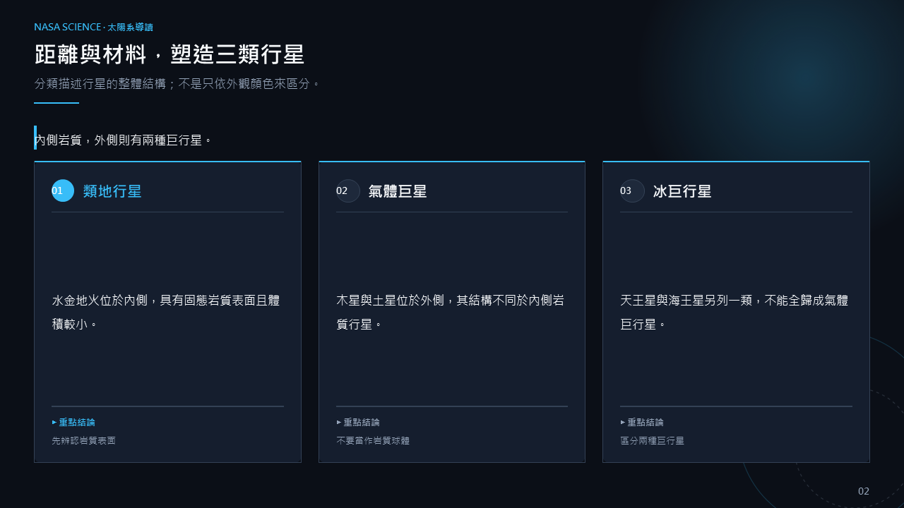
04 · 用同一張表，比較三類行星

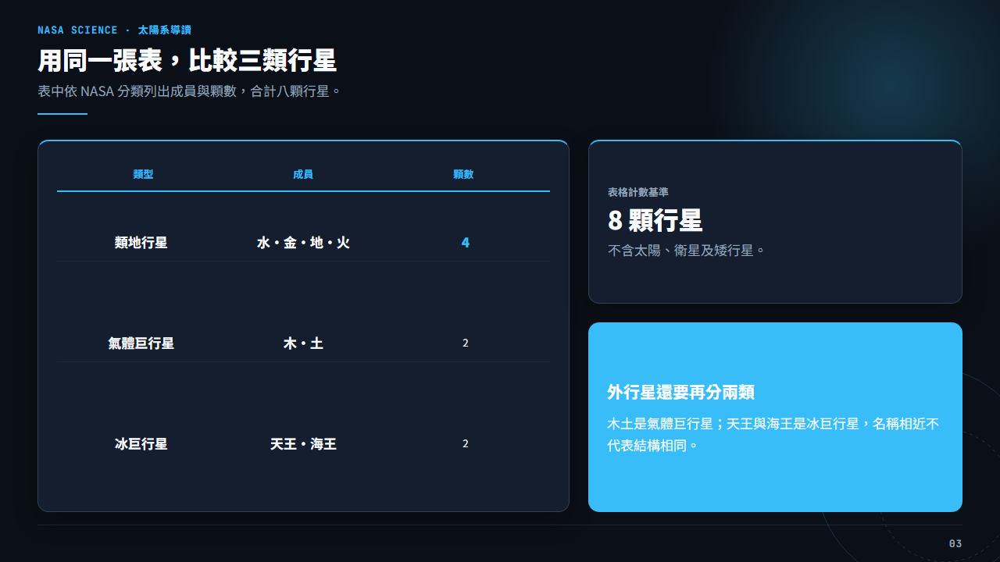

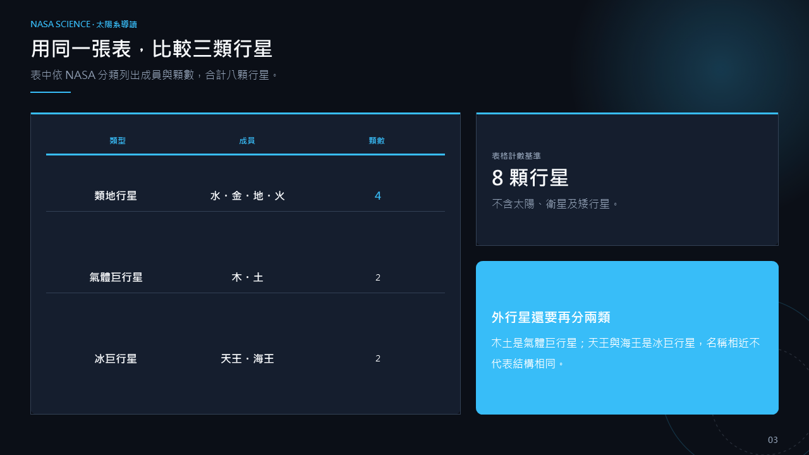
05 · 類地行星占八顆行星的一半

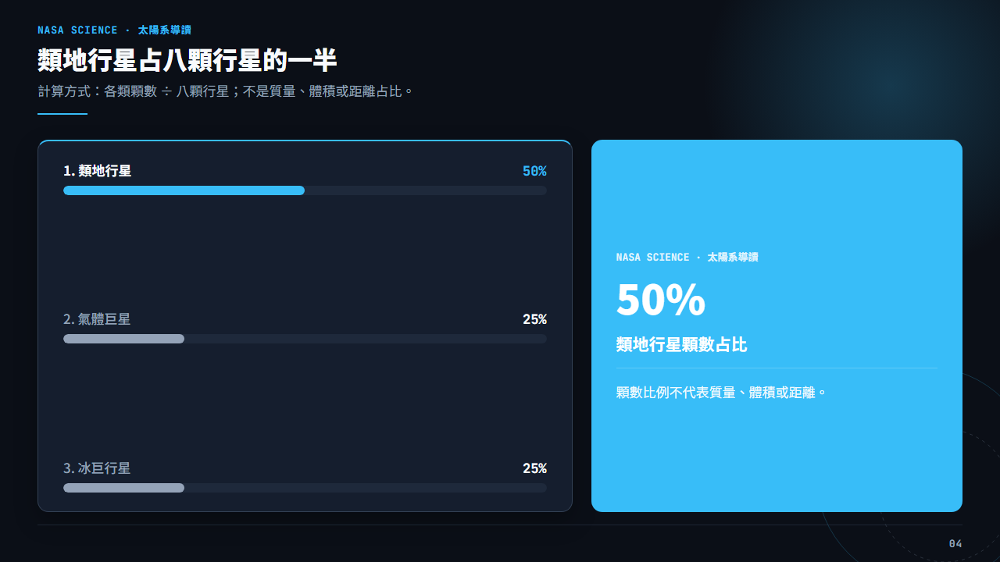

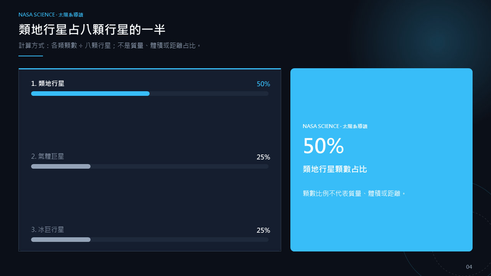
06 · 行星定義，需要同時滿足三個條件

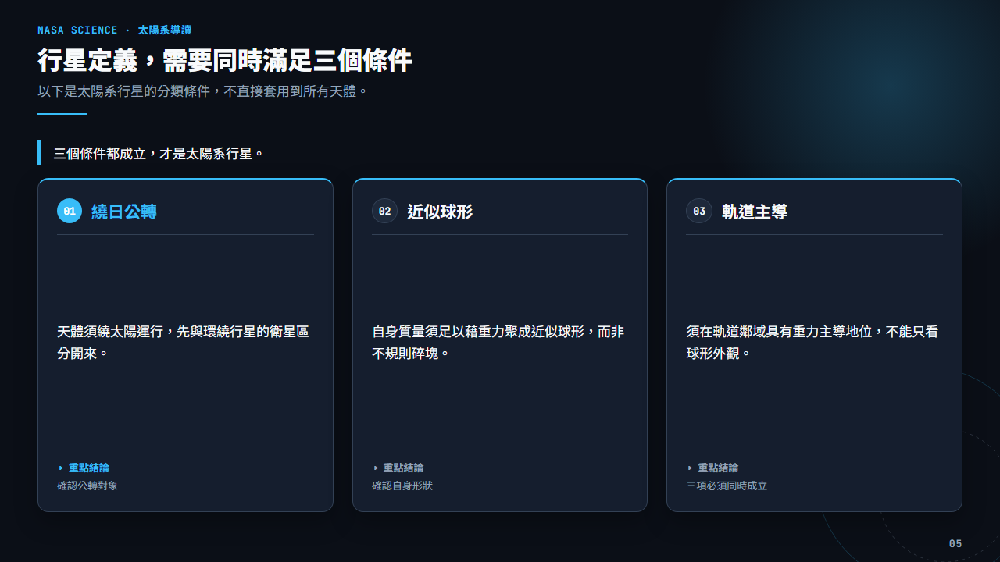

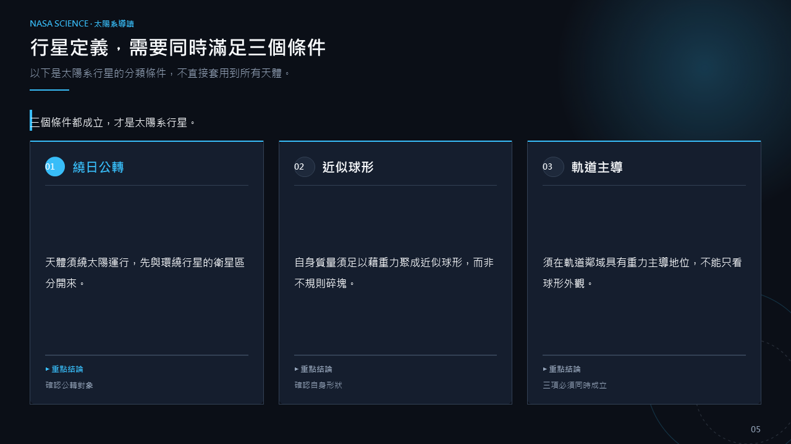
07 · 讀太陽系資料，先分清三個尺度

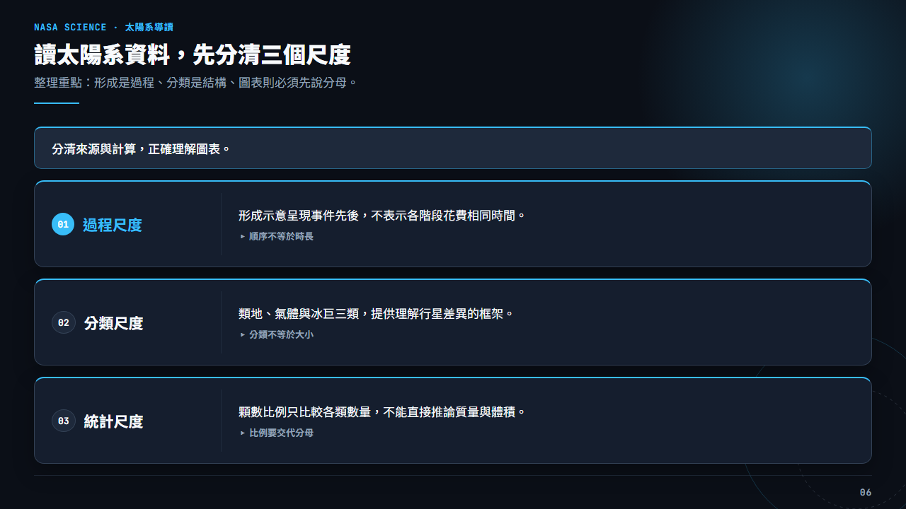

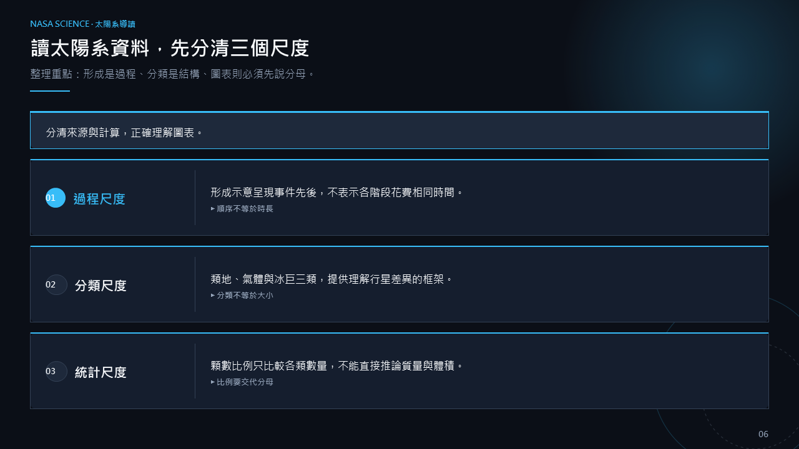